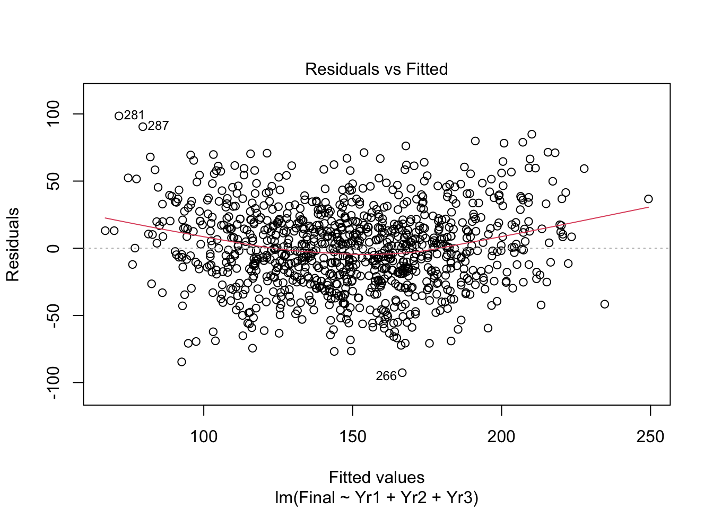

plot(cars)
The slides are here.. The video is linked here.
Our second class meeting will focus on Chapter 3; and Chapter 4 of Handbook of Regression Modeling in People Analytics for next time.
I will work with R’s internal dataset on cars: cars. There are two variables in the dataset, this is what they look like.
plot(cars)
I will work with the speed variable. The hypothesis to advance is that 17 or greater is the true average speed. The alternative must then be that the average speed is less than 17. Knowing only the sample size, I can figure out what \(t\) must be to reject 17 or greater and conclude that the true average must be less with 90% probability. The sample mean would have to be at least qt(0.1, 49) standard errors below 17 to rule out a mean of 17 or greater. Now let’s see what we have. Let me skim the data for the relevant information.
library(skimr)
skim(cars)| Name | cars |
| Number of rows | 50 |
| Number of columns | 2 |
| _______________________ | |
| Column type frequency: | |
| numeric | 2 |
| ________________________ | |
| Group variables | None |
Variable type: numeric
| skim_variable | n_missing | complete_rate | mean | sd | p0 | p25 | p50 | p75 | p100 | hist |
|---|---|---|---|---|---|---|---|---|---|---|
| speed | 0 | 1 | 15.40 | 5.29 | 4 | 12 | 15 | 19 | 25 | ▂▅▇▇▃ |
| dist | 0 | 1 | 42.98 | 25.77 | 2 | 26 | 36 | 56 | 120 | ▅▇▅▂▁ |
Doing the math by hand, I get:
\[ t = \frac{\overline{x} - \mu}{\frac{s}{\sqrt{n}}} = \frac{15.4 - 17}{\frac{5.29}{\sqrt{50}}} = -2.14 \]
Interpreting the result, the sample mean is 2.14 standard errors below the hypothetical mean of 17. The probability of a sample mean of 15.4 [or smaller] given a true average of 17, this standard deviation and sample size is pt(-2.14, 49) = 0.0186798. Notice that probability is less than 0.1; thus with at least 90% confidence, the true mean is not 17 or greater and thus must be smaller. Assuming the hypothetical mean [17 or greater] is true, the likelihood of generating a sample mean of 15.4 is only 0.0187 and this is far less than the 10% permissible outside of 90% confidence. Indeed, any sample mean more than 1.299 standard errors below 17 would be too small to sustain the belief that the true mean is 17 or greater because qt(0.1, 49) is -1.299. Put in the original metric, any sample mean below 16.0285747 would require a rejection of the claim that the true mean is 17 or greater with 90% confidence.
The confidence interval is always centered on the sample mean. Rearranging the equation above and solving for \(\mu\) given the \(t\) above, we get
\[ \mu = \overline{x} - t(\frac{s}{\sqrt{n}}) = 15.4 - (-1.299*\frac{5.29}{\sqrt{50}}) = 16.37143 \]
With 90% confidence, given this sample mean, the true value should be less than 16.37143.
t.testt.test(cars$speed, conf.level = 0.9, alternative = "less", mu=17)
One Sample t-test
data: cars$speed
t = -2.1397, df = 49, p-value = 0.01869
alternative hypothesis: true mean is less than 17
90 percent confidence interval:
-Inf 16.37143
sample estimates:
mean of x
15.4 \[ t(\frac{s}{\sqrt{n}}) = \overline{x} - \mu \] can lead to either:
\[ \overline{x} - t(\frac{s}{\sqrt{n}}) = \mu \]
or
\[ \overline{x} = \mu + t(\frac{s}{\sqrt{n}}) \]
So a minus \(t\) will be below \(\mu\) but above \(\overline{x}\) and a positive \(t\) will be above \(\mu\) but below \(\overline{x}\).
1. An hypothesis test given \(\mu\) with an alternative that is less must then render an upper bound given \(\overline{x}\).
2. An hypothesis test given \(\mu\) with an alternative that is greater must then render a lower bound given \(\overline{x}\).
Given a sample size \(n\), some unknown constant \(\mu\) and satisfaction of Lindeberg’s condition, the sampling distribution of the sample mean follows a \(t\) distribution with degrees of freedom \(n-1\). To render a graphical representation, let’s arbitrarily set n to 50, as in the above example. Here is a plot.
plot(seq(-5,5, by=0.01), dt(seq(-5,5, by=0.01), df=49), xlab=expression(paste("x-bar -",mu," (measured in std. errors of the mean)", sep="")), ylab="Density", type="l")
scale transformationWe can now reverse the scale by the standard error of the mean. In the above example, it is 0.7478. Measured in miles per hour, we obtain:
plot(seq(-5,5, by=0.01)*0.7478, dt(seq(-5,5, by=0.01), df=49), xlab=expression(paste("x-bar -",mu," (measured in mph)", sep="")), ylab="Density", type="l")
Now we will take the concrete example above.
We claim that the true mean is 17 or greater. Now we need center the distribution above as though the claim is true.
plot(x=17+seq(-5,5, by=0.01)*0.7478, dt(seq(-5,5, by=0.01), df=49), xlab=expression(paste(mu," (measured in mph)", sep="")), ylab="Density", type="l")
abline(v=17, col="red")
polygon(x = c(17+seq(0,5, by=0.01)*0.7478, 21), y = c(0, dt(seq(0,5, by=0.01), df=49)), col = "red")
The sample mean is estimated to be 15.4. How likely is that?
plot(x=17+seq(-5,5, by=0.01)*0.7478, dt(seq(-5,5, by=0.01), df=49), xlab=expression(paste("x-bar -",mu," (measured in mph)", sep="")), ylab="Density", type="l")
abline(v=17, col="red")
abline(v=15.4, col="blue")
polygon(x = c(17+seq(0,5, by=0.01)*0.7478, 21), y = c(0, dt(seq(0,5, by=0.01), df=49)), col = "red")
polygon(x = c(12, 17+seq(-5,-2.14, by=0.01)*0.7478), y = c(dt(seq(-5,-2.14, by=0.01), df=49), 0), col = "blue")
abline(h=0, col="black")
abline(v=17 + qt(0.1, df=49)*0.7874, col="black", lty=3)The probability of seeing such a small sample mean if the true average is 17 is only 0.01869. The probability above the dotted black line is 0.9 with 0.1 below. WIth 90% confidence, anything below this would be sufficient evidence to reject the claim that the true average is 17 or above.
Let’s take the sample mean as the center and work out a confidence interval at 90%. It’s exactly the 16.37143 gives above.
plot(x=15.4+seq(-5,5, by=0.01)*0.7478, dt(seq(-5,5, by=0.01), df=49), xlab=expression(paste(mu," | x-bar (measured in mph)", sep="")), ylab="Density", type="l")
abline(v=15.4, col="blue")
abline(v=15.4 - qt(0.1, df=49)*0.7478, col="black", lty=3)
polygon(x = c(11, 15.4+seq(-5,1.3, by=0.01)*0.7478), y = c(dt(seq(-5,1.3, by=0.01), df=49), 0), col = "blue")
As an aside, 17 has exactly 0.01869 probability above it shown in orange.
plot(x=15.4+seq(-5,5, by=0.01)*0.7478, dt(seq(-5,5, by=0.01), df=49), xlab=expression(paste(mu," | x-bar (measured in mph)", sep="")), ylab="Density", type="l")
abline(v=15.4, col="blue")
abline(v=15.4 - qt(0.1, df=49)*0.7478, col="black", lty=3)
polygon(x = c(11, 15.4+seq(-5,1.3, by=0.01)*0.7478), y = c(dt(seq(-5,1.3, by=0.01), df=49), 0), col = "blue")
polygon(x = c(15.4+seq(2.14,5, by=0.01)*0.7478, 17), y = c(dt(seq(2.14,5, by=0.01), df=49), 0), col = "orange")
A linear regression example. The data can be loaded from the web.
# if needed, download ugtests data
url <- "http://peopleanalytics-regression-book.org/data/ugtests.csv"
ugtests <- read.csv(url)
str(ugtests)'data.frame': 975 obs. of 4 variables:
$ Yr1 : int 27 70 27 26 46 86 40 60 49 80 ...
$ Yr2 : int 50 104 36 75 77 122 100 92 98 127 ...
$ Yr3 : int 52 126 148 115 75 119 125 78 119 67 ...
$ Final: int 93 207 175 125 114 159 153 84 147 80 ...There are 975 individuals graduating in the past three years from the biology department of a large academic institution. We have data on four examinations:
library(skimr); library(kableExtra)
skim(ugtests) %>% dplyr::filter(skim_type=="numeric") %>% kable()| skim_type | skim_variable | n_missing | complete_rate | numeric.mean | numeric.sd | numeric.p0 | numeric.p25 | numeric.p50 | numeric.p75 | numeric.p100 | numeric.hist |
|---|---|---|---|---|---|---|---|---|---|---|---|
| numeric | Yr1 | 0 | 1 | 52.14564 | 14.92408 | 3 | 42 | 53 | 62 | 99 | ▁▃▇▅▁ |
| numeric | Yr2 | 0 | 1 | 92.39897 | 30.03847 | 6 | 73 | 94 | 112 | 188 | ▁▅▇▃▁ |
| numeric | Yr3 | 0 | 1 | 105.12103 | 33.50705 | 8 | 81 | 105 | 130 | 198 | ▁▅▇▅▁ |
| numeric | Final | 0 | 1 | 148.96205 | 44.33966 | 8 | 118 | 147 | 175 | 295 | ▁▅▇▃▁ |
library(GGally)Loading required package: ggplot2Registered S3 method overwritten by 'GGally':
method from
+.gg ggplot2# display a pairplot of all four columns of data
GGally::ggpairs(ugtests)
my.lm <- lm(Final ~ Yr1 + Yr2 + Yr3, data=ugtests)
summary(my.lm)
Call:
lm(formula = Final ~ Yr1 + Yr2 + Yr3, data = ugtests)
Residuals:
Min 1Q Median 3Q Max
-92.638 -20.349 0.001 18.954 98.489
Coefficients:
Estimate Std. Error t value Pr(>|t|)
(Intercept) 14.14599 5.48006 2.581 0.00999 **
Yr1 0.07603 0.06538 1.163 0.24519
Yr2 0.43129 0.03251 13.267 < 2e-16 ***
Yr3 0.86568 0.02914 29.710 < 2e-16 ***
---
Signif. codes: 0 '***' 0.001 '**' 0.01 '*' 0.05 '.' 0.1 ' ' 1
Residual standard error: 30.43 on 971 degrees of freedom
Multiple R-squared: 0.5303, Adjusted R-squared: 0.5289
F-statistic: 365.5 on 3 and 971 DF, p-value: < 2.2e-16confint(my.lm) 2.5 % 97.5 %
(Intercept) 3.39187185 24.9001071
Yr1 -0.05227936 0.2043318
Yr2 0.36749170 0.4950791
Yr3 0.80850142 0.9228610predict(my.lm) 1 2 3 4 5 6 7 8
82.77839 173.39734 159.84579 148.02242 115.77826 176.31713 168.52573 125.90895
9 10 11 12 13 14 15 16
163.15331 133.00197 128.01391 168.83298 167.28471 178.01432 162.81842 183.81939
17 18 19 20 21 22 23 24
143.96109 175.00126 148.29571 183.06708 157.92531 119.95460 165.18879 178.26106
25 26 27 28 29 30 31 32
193.06715 166.52931 200.39004 182.94018 181.82752 104.19713 146.86195 158.59539
33 34 35 36 37 38 39 40
137.30246 155.14171 147.59592 188.38693 149.46722 189.57199 165.36883 207.92058
41 42 43 44 45 46 47 48
158.81869 145.13679 127.04145 184.89905 223.48248 190.68129 105.91152 188.47370
49 50 51 52 53 54 55 56
169.91737 125.98673 179.91299 155.57364 94.78176 107.90209 142.01859 127.27405
57 58 59 60 61 62 63 64
143.04734 90.43469 115.62032 186.36874 164.78997 182.04486 138.72937 173.80034
65 66 67 68 69 70 71 72
162.81500 110.89761 157.53103 171.04054 164.29372 151.36275 203.73632 133.85978
73 74 75 76 77 78 79 80
158.14239 145.03931 114.09836 136.39042 150.19917 99.56150 145.66277 116.39753
81 82 83 84 85 86 87 88
124.72053 138.48918 167.84005 102.19417 187.51815 148.69592 199.82845 146.45894
89 90 91 92 93 94 95 96
123.73077 134.25546 133.56188 171.39099 148.68036 160.00402 141.50056 143.96279
97 98 99 100 101 102 103 104
126.22552 146.13759 160.82167 168.19393 139.15162 126.63646 142.87183 209.15707
105 106 107 108 109 110 111 112
161.60200 169.65369 101.21716 132.64506 133.35245 98.58109 104.99919 122.47906
113 114 115 116 117 118 119 120
132.50088 135.04371 169.26422 156.66084 201.79068 102.50589 222.36274 137.85639
121 122 123 124 125 126 127 128
117.81825 92.61602 166.14124 90.81172 155.28613 221.52163 117.23941 125.32530
129 130 131 132 133 134 135 136
154.28567 125.02463 149.23229 188.75433 167.65071 141.48812 148.73942 128.18946
137 138 139 140 141 142 143 144
173.30410 113.50085 146.77068 144.70245 143.32800 172.42426 146.83111 161.80039
145 146 147 148 149 150 151 152
155.74509 121.45958 120.19341 196.55029 107.52819 145.84903 129.87730 84.26017
153 154 155 156 157 158 159 160
147.22201 172.38103 148.90671 191.37033 92.95881 113.93839 115.32834 217.95006
161 162 163 164 165 166 167 168
109.04391 182.47442 173.66693 143.54644 213.24494 154.53040 157.99341 168.20918
169 170 171 172 173 174 175 176
142.79439 111.22351 169.00364 95.59458 200.50023 150.77458 103.15936 136.32932
177 178 179 180 181 182 183 184
152.35701 121.13371 116.24995 172.44290 105.74986 144.68854 142.16437 103.03841
185 186 187 188 189 190 191 192
84.20453 124.65866 175.16434 181.48777 183.17732 166.12881 109.68631 149.19871
193 194 195 196 197 198 199 200
148.99240 123.27911 156.46977 111.37381 133.40676 105.70352 178.22203 162.98116
201 202 203 204 205 206 207 208
88.71579 142.38459 126.29081 195.54808 121.88463 175.31327 171.16320 128.80527
209 210 211 212 213 214 215 216
157.38069 144.47601 145.67519 157.45049 90.83488 125.04501 117.56217 166.65784
217 218 219 220 221 222 223 224
142.60365 151.28361 138.80714 152.33864 177.32217 135.09624 169.95920 161.33378
225 226 227 228 229 230 231 232
150.99366 167.63206 102.71562 110.43832 159.52327 151.78922 158.52699 186.41680
233 234 235 236 237 238 239 240
124.74060 118.60478 162.54510 198.55014 123.77119 209.05134 207.10887 110.39340
241 242 243 244 245 246 247 248
139.38280 168.02915 166.40038 219.52660 144.11283 160.18067 182.99728 151.63440
249 250 251 252 253 254 255 256
152.04702 175.37858 153.20573 193.75934 142.24807 204.76959 147.85201 91.68673
257 258 259 260 261 262 263 264
178.87067 164.06869 167.01479 172.92703 123.77229 175.05272 117.60429 111.97751
265 266 267 268 269 270 271 272
159.97603 166.63812 173.31198 207.68459 140.66875 135.57418 176.71423 170.00300
273 274 275 276 277 278 279 280
170.04457 177.26620 133.02378 146.19662 166.87042 163.96474 156.38611 160.34511
281 282 283 284 285 286 287 288
71.51067 192.31939 89.27563 146.58132 139.44811 105.11565 79.53330 121.12299
289 290 291 292 293 294 295 296
110.14355 178.41312 158.55532 181.01467 203.41524 207.36041 108.01030 173.06385
297 298 299 300 301 302 303 304
146.09265 128.71230 116.85816 216.44539 169.53445 124.77337 164.95305 190.56794
305 306 307 308 309 310 311 312
129.06273 142.52591 95.61497 171.09510 188.31374 93.51730 117.69757 121.30134
313 314 315 316 317 318 319 320
178.57730 157.74528 170.68833 120.24799 116.37542 164.43192 175.61114 220.06158
321 322 323 324 325 326 327 328
181.74555 160.98583 86.27842 195.97205 136.46895 102.86908 220.53640 125.83914
329 330 331 332 333 334 335 336
186.27545 176.93132 178.40037 148.32790 181.84927 133.17072 167.12163 191.16061
337 338 339 340 341 342 343 344
167.95000 211.35983 163.46813 96.61852 151.47610 139.82344 138.38826 176.47513
345 346 347 348 349 350 351 352
106.40781 158.88878 179.08940 148.79682 143.06119 93.72813 134.88542 153.31118
353 354 355 356 357 358 359 360
116.84713 186.85398 177.47107 142.76953 163.52582 167.98283 177.39367 213.53039
361 362 363 364 365 366 367 368
161.02175 129.52203 179.97033 161.03589 136.94095 127.20454 159.24064 152.34627
369 370 371 372 373 374 375 376
188.04240 190.15391 181.43039 132.62329 167.16688 157.13535 200.36373 123.08217
377 378 379 380 381 382 383 384
95.83962 182.55975 167.50830 76.89241 140.75411 116.13802 108.41218 171.20843
385 386 387 388 389 390 391 392
108.95821 159.18156 148.49892 109.31069 139.47722 178.64745 165.07685 175.29912
393 394 395 396 397 398 399 400
157.02854 160.68996 198.45546 120.21546 148.23662 146.56264 168.47318 172.63256
401 402 403 404 405 406 407 408
199.19678 148.82619 111.56629 159.27455 77.41079 130.80692 104.47776 175.76773
409 410 411 412 413 414 415 416
146.68981 136.07840 196.72408 116.78047 108.14538 140.87229 104.28901 220.51154
417 418 419 420 421 422 423 424
124.22878 120.27876 150.89275 160.30190 125.30044 130.61268 165.22609 182.98173
425 426 427 428 429 430 431 432
197.48268 127.15171 137.72440 138.36959 189.30688 131.46424 120.45398 126.79471
433 434 435 436 437 438 439 440
159.92036 106.12099 145.96688 199.03398 200.80264 91.66356 207.26604 120.99236
441 442 443 444 445 446 447 448
134.59685 186.49729 125.37228 91.33883 215.94567 113.12211 140.71538 183.96527
449 450 451 452 453 454 455 456
109.96835 147.36813 152.39432 149.86401 106.21055 163.41078 168.27444 155.85423
457 458 459 460 461 462 463 464
136.78099 204.50110 115.72090 166.82063 113.56614 123.34751 136.70975 143.39951
465 466 467 468 469 470 471 472
135.34580 98.44458 164.99800 163.75184 158.33794 149.70401 146.75652 149.65797
473 474 475 476 477 478 479 480
201.56434 160.68342 144.82817 147.41448 113.52576 191.18718 144.53477 145.80859
481 482 483 484 485 486 487 488
145.64267 181.73417 141.61701 149.51494 132.31808 167.51278 128.26862 132.21064
489 490 491 492 493 494 495 496
94.26651 181.22267 139.62648 196.96431 131.21919 86.09835 159.41616 199.98189
497 498 499 500 501 502 503 504
118.21873 127.61573 189.53638 160.71170 108.63548 137.19988 117.61193 115.58129
505 506 507 508 509 510 511 512
181.74385 153.85581 111.85147 129.21202 127.75988 125.59242 156.39825 122.05988
513 514 515 516 517 518 519 520
130.68281 168.16906 153.41066 145.22976 92.58597 162.04743 111.33337 108.24769
521 522 523 524 525 526 527 528
167.66315 121.18656 149.18143 210.13095 183.02837 140.53427 146.56573 144.87310
529 530 531 532 533 534 535 536
166.49509 122.59210 150.75937 125.61078 86.18543 102.22212 155.43198 148.15748
537 538 539 540 541 542 543 544
149.35042 211.70608 166.89867 163.01990 165.98605 131.55750 139.05699 136.26600
545 546 547 548 549 550 551 552
187.37512 209.16296 124.24118 217.15732 131.45206 200.44739 161.97900 211.75724
553 554 555 556 557 558 559 560
196.60627 158.87603 146.42271 158.66215 94.57544 130.58982 219.83518 168.73653
561 562 563 564 565 566 567 568
103.23676 138.61184 139.28506 90.38635 107.43178 145.56665 182.75359 84.66830
569 570 571 572 573 574 575 576
95.54172 110.40895 141.69131 149.70431 155.93306 147.90934 66.92172 147.40374
577 578 579 580 581 582 583 584
164.29821 101.57863 140.66876 128.56197 180.70434 152.35734 98.03817 120.94437
585 586 587 588 589 590 591 592
163.93671 103.51459 234.60747 183.02836 112.99979 126.88485 117.09249 197.43122
593 594 595 596 597 598 599 600
189.30520 199.85646 204.25296 116.47294 133.09952 159.90792 94.78936 146.62481
601 602 603 604 605 606 607 608
161.30100 206.37377 171.43030 102.88773 109.65036 109.00625 133.92054 119.10930
609 610 611 612 613 614 615 616
133.56496 161.88262 215.55343 143.80112 137.94141 115.89952 171.28105 124.59056
617 618 619 620 621 622 623 624
125.53644 117.37452 116.79146 120.18302 111.49305 145.67830 169.56072 142.96825
625 626 627 628 629 630 631 632
199.42203 178.96055 179.89291 127.84212 168.28382 170.12228 174.47724 209.10902
633 634 635 636 637 638 639 640
150.86026 98.97987 166.86275 142.15511 157.93122 133.83970 189.96146 181.17574
641 642 643 644 645 646 647 648
117.20864 128.77141 88.50434 140.26888 113.20755 159.03742 93.20243 205.15286
649 650 651 652 653 654 655 656
156.19785 93.57605 152.34148 167.76096 111.57876 156.65744 179.34831 116.69196
657 658 659 660 661 662 663 664
137.27616 138.71104 106.39228 174.14174 136.91016 131.00698 157.96093 144.11312
665 666 667 668 669 670 671 672
149.95415 97.68463 83.63646 140.30589 184.32985 101.12046 198.48657 141.59381
673 674 675 676 677 678 679 680
122.32839 132.94777 189.39847 193.85573 140.69053 128.54644 123.63920 174.14799
681 682 683 684 685 686 687 688
76.07789 142.56740 142.26049 103.90995 153.78283 184.23997 169.68028 163.73493
689 690 691 692 693 694 695 696
153.14078 214.91104 209.38485 187.78498 190.32461 203.45085 132.04024 147.59594
697 698 699 700 701 702 703 704
209.54622 152.67528 149.49657 119.85993 158.63245 193.95325 157.32780 74.61815
705 706 707 708 709 710 711 712
139.78303 148.86800 170.62168 177.30972 141.46807 165.29557 85.14906 195.68289
713 714 715 716 717 718 719 720
94.31627 174.03493 92.89663 124.01311 175.83164 101.39999 147.03294 142.49622
721 722 723 724 725 726 727 728
102.47200 160.55174 153.39793 179.41667 161.80378 188.13850 170.92407 181.38065
729 730 731 732 733 734 735 736
183.05153 109.29652 206.81269 107.39169 149.97108 115.57644 137.92279 112.17761
737 738 739 740 741 742 743 744
161.60959 123.38311 102.45505 121.23915 148.07805 104.21889 101.91801 104.84263
745 746 747 748 749 750 751 752
159.82396 145.34680 184.67126 149.98669 204.25467 127.65413 135.43458 188.38210
753 754 755 756 757 758 759 760
111.04171 163.76741 106.66981 187.99267 170.43716 131.38677 196.23994 158.66072
761 762 763 764 765 766 767 768
117.32960 116.56648 95.92667 204.91089 178.29951 170.92889 167.34383 117.10943
769 770 771 772 773 774 775 776
166.87970 175.31637 151.84175 133.86458 147.68267 183.06057 139.74572 191.49750
777 778 779 780 781 782 783 784
157.37761 206.26633 160.58114 188.55907 155.08604 158.00274 169.29532 130.42954
785 786 787 788 789 790 791 792
117.71002 110.82296 115.95208 131.84435 160.53279 157.60878 137.71198 207.13405
793 794 795 796 797 798 799 800
111.15026 134.09405 191.88358 143.70642 182.39076 123.30742 135.25593 159.66430
801 802 803 804 805 806 807 808
137.93381 148.97340 126.11531 96.50831 122.65395 161.04010 182.92128 115.70395
809 810 811 812 813 814 815 816
124.13266 130.35385 107.80088 109.31520 150.02567 165.23199 107.83846 208.98325
817 818 819 820 821 822 823 824
191.25359 132.38617 132.99406 124.38528 190.38509 168.24510 144.47013 186.40262
825 826 827 828 829 830 831 832
193.52193 199.05886 189.04803 165.37642 227.71931 181.57172 194.40629 114.47539
833 834 835 836 837 838 839 840
126.94223 173.55531 173.64069 86.12804 158.79830 159.37572 114.80716 126.70284
841 842 843 844 845 846 847 848
133.02065 131.38989 69.92034 133.43639 115.30965 174.83223 117.28155 215.16084
849 850 851 852 853 854 855 856
115.09295 118.63449 149.71050 98.83716 137.78178 157.02373 181.20713 147.35541
857 858 859 860 861 862 863 864
135.67820 162.41962 122.64183 166.25939 165.39337 173.02002 142.67348 118.10370
865 866 867 868 869 870 871 872
121.27506 156.76180 102.17407 112.04873 161.54260 146.19527 151.90878 98.57488
873 874 875 876 877 878 879 880
148.95197 141.54518 144.79879 135.99896 220.22154 166.94160 170.91508 134.34702
881 882 883 884 885 886 887 888
140.27201 149.00314 181.41794 186.38880 112.23641 137.02320 150.14489 153.80293
889 890 891 892 893 894 895 896
133.78237 177.00591 97.29345 177.82945 108.96474 143.77484 109.88781 137.99429
897 898 899 900 901 902 903 904
195.43959 133.20663 165.10963 98.74387 102.76223 183.61170 249.30085 178.79915
905 906 907 908 909 910 911 912
147.14736 82.47596 201.46996 151.11012 134.65252 92.85790 122.84505 139.48203
913 914 915 916 917 918 919 920
179.77475 171.35085 173.99905 212.88938 125.60796 177.90413 165.16701 166.47500
921 922 923 924 925 926 927 928
114.76052 135.98509 107.74073 168.20780 207.28439 128.85987 173.56322 125.16145
929 930 931 932 933 934 935 936
92.67335 162.16668 206.59530 187.35367 164.60405 159.80983 128.72787 169.05167
937 938 939 940 941 942 943 944
129.30531 113.91941 116.44077 147.14597 116.33535 198.55777 135.72938 161.85915
945 946 947 948 949 950 951 952
168.73342 165.43831 113.07268 173.07630 97.41609 163.47127 163.04448 178.74035
953 954 955 956 957 958 959 960
161.54741 110.63222 185.37558 155.14032 81.43196 121.41604 168.27137 116.81465
961 962 963 964 965 966 967 968
162.30799 128.27654 181.95155 106.08367 203.26144 124.03628 187.93702 158.60301
969 970 971 972 973 974 975
82.05091 167.86634 193.10652 144.21857 166.81020 154.91225 184.98919 plot(my.lm)
library(car)Loading required package: carDataavPlots(my.lm)library(gvlma)
gvlma(my.lm)
Call:
lm(formula = Final ~ Yr1 + Yr2 + Yr3, data = ugtests)
Coefficients:
(Intercept) Yr1 Yr2 Yr3
14.14599 0.07603 0.43129 0.86568
ASSESSMENT OF THE LINEAR MODEL ASSUMPTIONS
USING THE GLOBAL TEST ON 4 DEGREES-OF-FREEDOM:
Level of Significance = 0.05
Call:
gvlma(x = my.lm)
Value p-value Decision
Global Stat 54.24704 4.672e-11 Assumptions NOT satisfied!
Skewness 0.73224 3.922e-01 Assumptions acceptable.
Kurtosis 0.06324 8.015e-01 Assumptions acceptable.
Link Function 53.43397 2.675e-13 Assumptions NOT satisfied!
Heteroscedasticity 0.01759 8.945e-01 Assumptions acceptable.library(visreg)
visreg(my.lm, xvar="Yr2")